SYNK 마스코트 시안 · 열한째 판
펠트 큐브,블렌더에서 진짜 털로.
앞선 판은 브라우저가 털을 흉내 낸 그림이라 구운 사진만 못했습니다. 이번에는 GPT 6.2와 카본이 각각 블렌더 모델을 짓고, 털을 한 올씩 심어 렌더했습니다. 눈은 고르신 도트 눈입니다. 두 판을 구운 사진 옆에 놓았습니다.
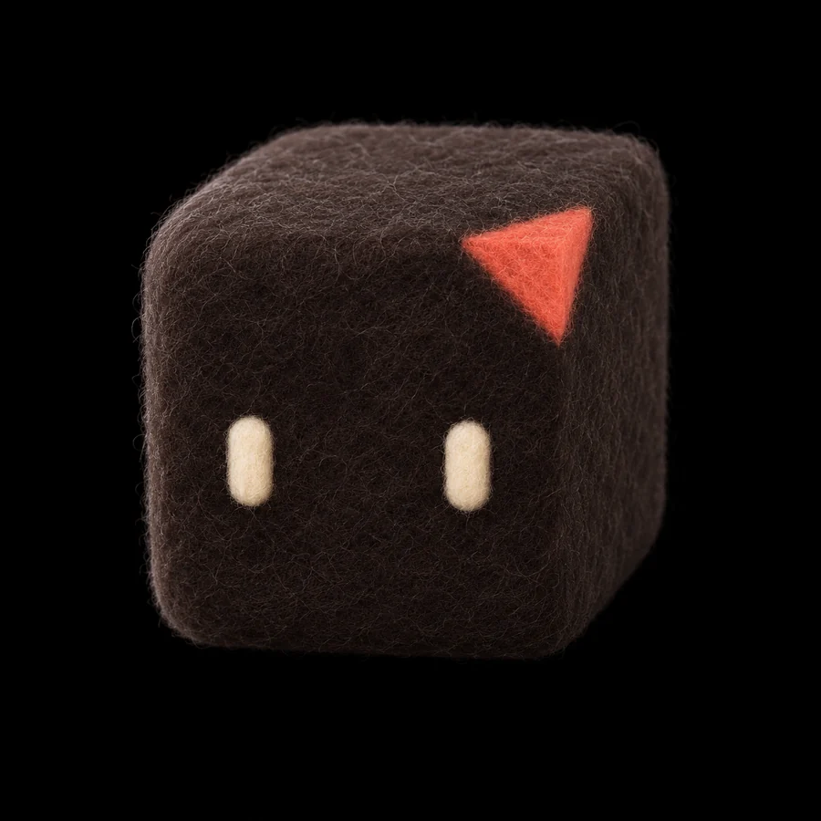
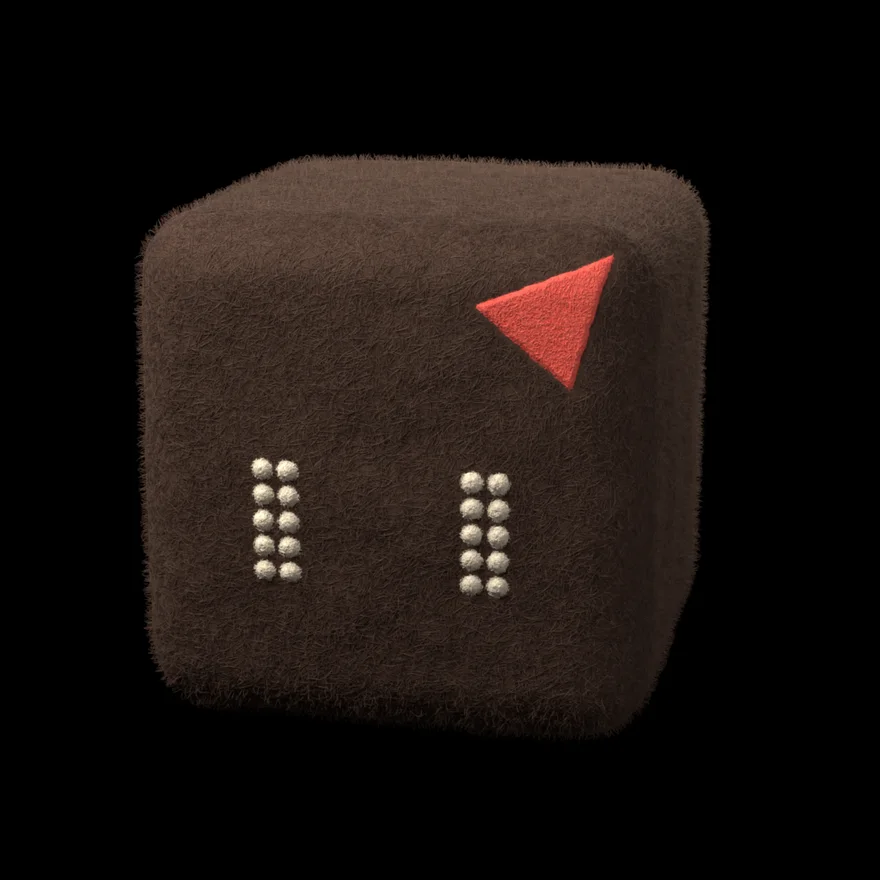
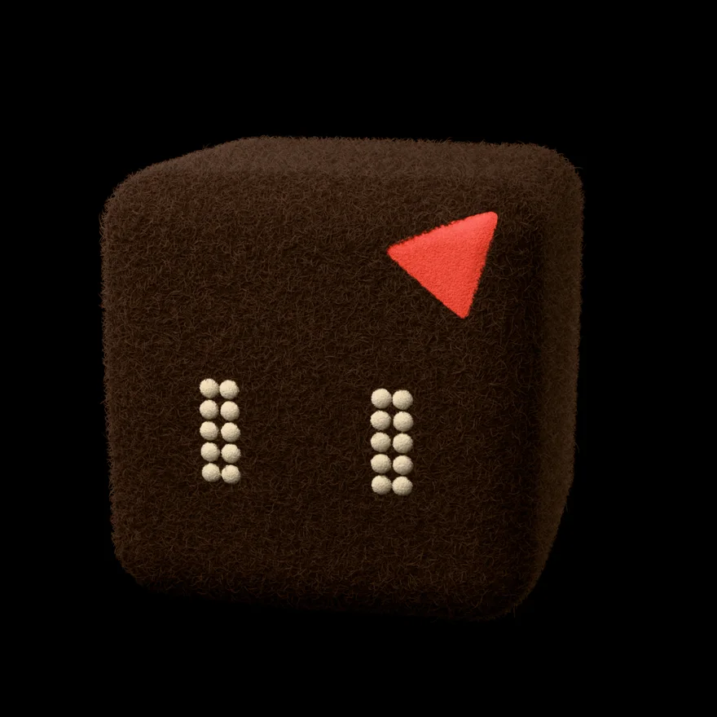
입체로 돌려 보기
돌려도 세모는 세모입니다
두 판을 좌우로 돌려 렌더했습니다. 그림 위에서 손이나 마우스를 좌우로 움직이면 그만큼 돕니다. 아래 작은 그림은 로딩 때의 구와 크림 색입니다. 아직 표정과 동작은 없습니다. 판을 고르시면 그 판으로 짓습니다.
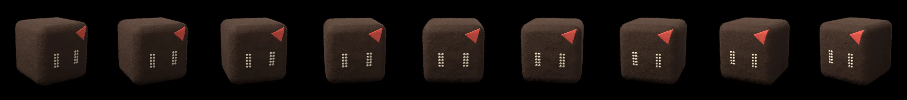
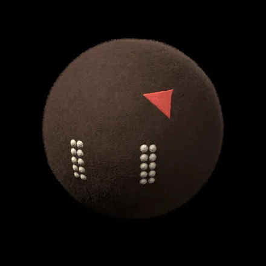
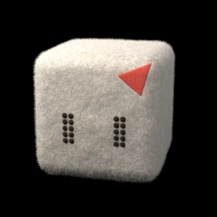
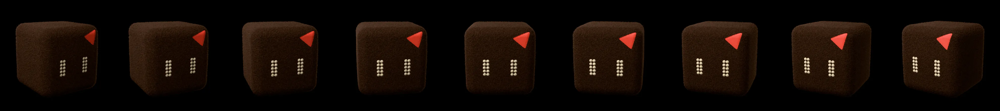
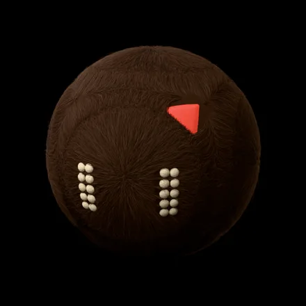
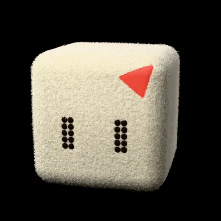
앞선 판 · 브라우저가 그리는 큐브
이 브라우저에서는 움직이는 큐브를 그리지 못합니다. 크롬이나 엣지에서 열어 주세요.
열째 판
펠트 큐브
지금 색은 잉크 몸 · 크림 눈 · 코랄 세모입니다. 아래 여덟 벌에서 바꿉니다. 앞면 귀퉁이에 다른 색 양모로 세모 조각을 댔고, 답이 나온 순간에는 눈이 그 색으로 켜집니다. 누르면 눈을 감고 꼭짓점으로 서서 돕니다.
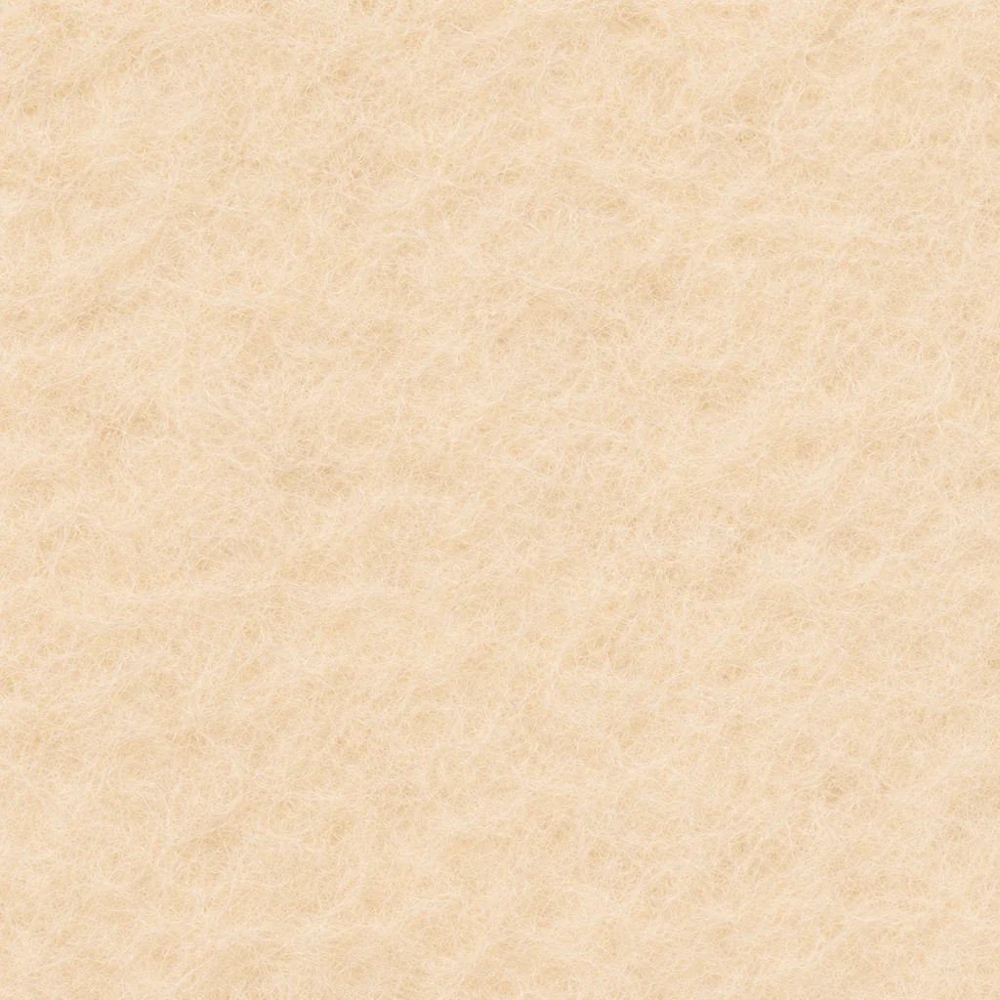
색 조합
여덟 벌
몸, 눈, 세모 조각의 색을 달리했습니다. 하나를 누르면 위의 큰 큐브가 그 색으로 바뀝니다. 앞의 셋은 SYNK의 세 색인 잉크, 종이색, 코랄만 썼습니다.
여섯째 판
깎은 큐브
앞 위 오른쪽 꼭짓점 하나를 깎았습니다. 서서 돌 때 그 면이 한 바퀴에 한 번 반짝입니다. 로딩은 면이 하나씩 깎여 나가는 것으로 보입니다. 답이 나오면 눈이 코랄로 한 번 켜졌다 돌아옵니다.
여섯째 판
점 눈 모놀리스
앞 위 왼쪽 꼭짓점 하나를 깎았습니다. 깎은 면에도 테가 서고, 돌 때 한 번 반짝입니다. 로딩은 모서리 열두 개가 하나씩 켜지는 것으로 보입니다. 답이 나오면 눈이 코랄로 한 번 켜졌다 돌아옵니다.
펠트로 만든다면
펠트 큐브
같은 큐브를 양모 펠트로 구운 사진입니다. 움직이지 않습니다. 색은 SYNK 로고의 잉크색과 종이색이고, 셋째는 꼭짓점 하나에만 코랄을 썼습니다.
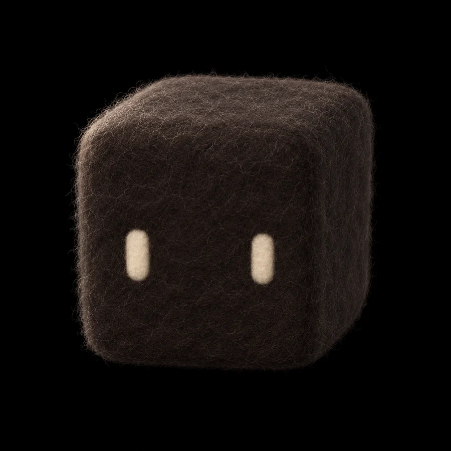
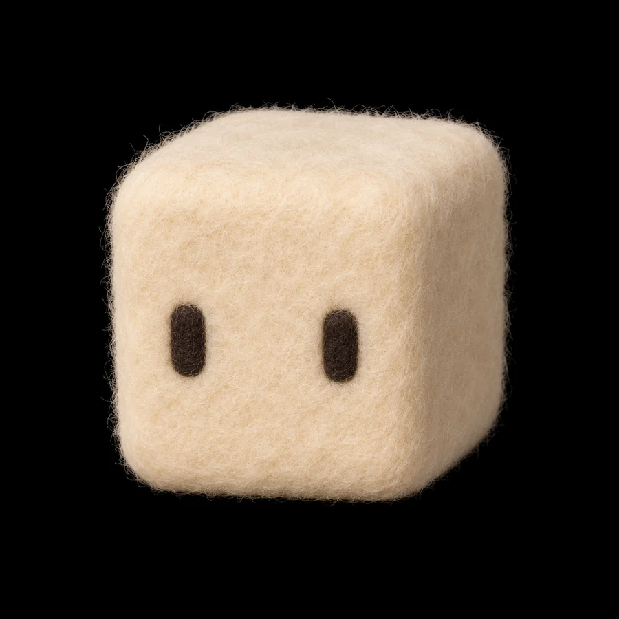
앞서 본 것
넷째 판
서서 도는 깎은 큐브
평소에는 깎은 큐브입니다. 생각할 때 눈을 끄고 꼭짓점 하나로 서서 돕니다. 도는 동안 면마다 빛줄기가 차례로 지나갑니다. 답이 나오면 제자리로 돌아와 눈을 켜고 웃습니다.
다섯째 판
점 눈을 단 모놀리스
몸은 모놀리스 그대로입니다. 눈만 가는 틈에서 깎은 큐브의 점 눈으로 바꿨습니다. 생각할 때는 똑같이 꼭짓점으로 서서 돌고, 가는 빛 한 줄이 몸을 훑습니다.
셋째 판
뚜껑이 떠오르는 큐브
모서리를 더 둥글게 하고 눈을 크게, 낮게 달았습니다. 생각할 때 뚜껑이 떠올라 돌고 그 밑에 빛 구슬이 뜹니다. 답이 나오면 뚜껑이 내려와 딱 맞고, 큐브가 한 번 통 튑니다. 바닥의 가는 고리는 큐브가 떠 있다는 표시입니다.
둘째 판 · 가 + 다
맞춰지는 깎은 큐브
평소에는 가처럼 한 덩어리입니다. 생각하는 동안 판이 따로 돌아 빛줄기가 조각나고, 답이 나오면 딱 맞춰지면서 빛줄기가 하나로 이어집니다. 그때 틈으로 빛이 샙니다.
가
깎은 큐브
지금 구의 형제입니다. 면마다 둥글게 결을 깎아, 빛줄기가 시곗바늘처럼 면 위를 돕니다. 눈은 구와 같은 점 눈입니다.
나
모놀리스
칼로 자른 듯한 검정 큐브입니다. 모서리에만 빛이 걸리고, 눈은 가는 틈 둘입니다. 생각할 때는 꼭짓점 하나로 서서 돕니다.
다
맞춰지는 큐브
판 다섯 장을 쌓은 큐브입니다. 생각하는 동안 판이 따로 돌고, 답이 나오면 딱 맞춰지면서 틈으로 빛이 샙니다. 싱크라는 이름을 몸으로 보여 줍니다.
라
구를 품은 큐브
유리 큐브 안에 지금의 검정 구가 떠 있습니다. 큐브는 천천히 돌고 구는 늘 이쪽을 봅니다. 구를 버리지 않고 큐브를 더하는 길입니다.
마
4차원 큐브
선으로만 그린 4차원 큐브입니다. 안쪽 큐브와 바깥 큐브가 서로 자리를 바꾸며 돕니다. 가장 낯설고, 얼굴보다는 표식에 가깝습니다.
큐브 옆의 작은 그림은 96, 44, 20픽셀로 줄였을 때의 모습입니다.